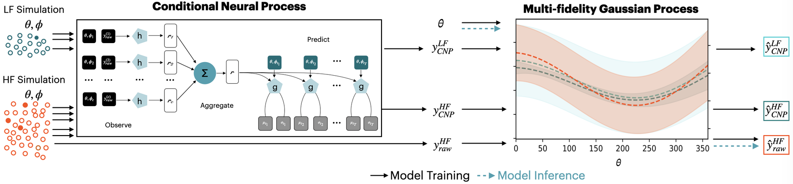
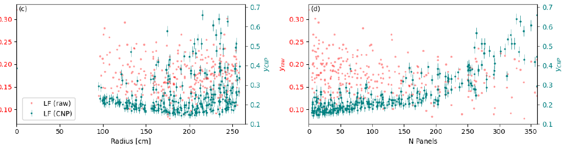
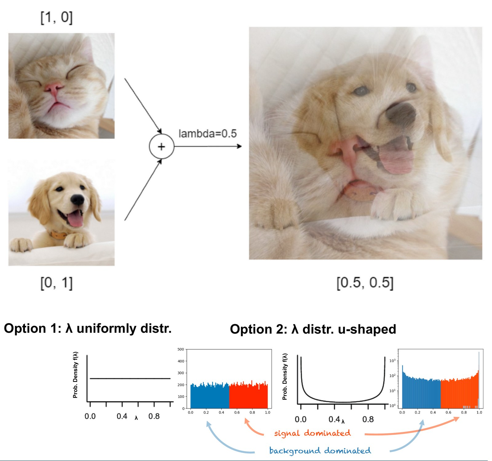
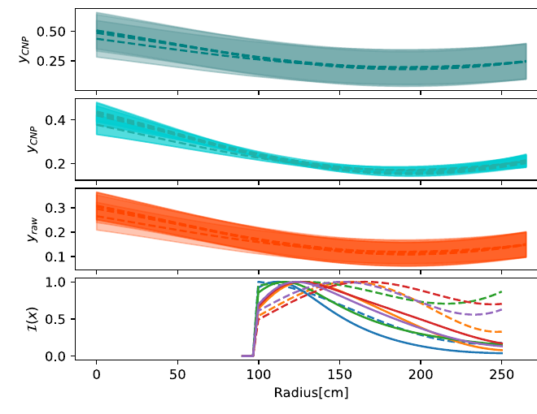

Detector designs for rare-event searches are compared by simulating how often a background reaches the detector. That probability is so small that most simulations count zero or a handful of events, and each high-fidelity run costs 170 CPU hours.
A conditional neural process turns each simulated event’s 0/1 outcome into a hit probability. A multi-fidelity Gaussian process combines those smooth estimates from cheap simulations with a few expensive ones, and active learning decides where to simulate next.
For the LEGEND neutron moderator: (66.5 ± 3.5)% less neutron-induced background, 3.3% of the compute of a brute-force search, and uncertainties that cover 69%, 95% and 100% of independent checks at 1σ, 2σ and 3σ.
1 · Motivation
Shielding a detector against a background that almost never happens
One background event can matter in an experiment that expects fewer than one signal per year.
LEGEND searches for neutrinoless double-beta decay in germanium, a process that, if it exists, has a half-life of more than \(10^{26}\) years. Its next stage, LEGEND-1000, aims for a background below \(10^{-5}\) counts per keV, kilogram and year. At that level, every background source has to be designed away before the experiment is built.
One of the hardest is cosmogenic. Cosmic muons that reach the underground laboratory create neutrons in and around the detector, and a neutron captured on germanium-76 produces germanium-77, whose decay can mimic the signal. At the Gran Sasso laboratory, this background alone is expected to exceed LEGEND-1000’s total background goal; at the deeper SNOLAB it would be about 60 times smaller. Short of moving deeper or tagging every germanium-77 production at the cost of live time, the remedy is a neutron moderator: a shield around the detector array that slows neutrons down so that they are captured on argon instead of germanium.
Two families of moderators were on the table, a closed cylinder around the detector array and a turbine of separate panels. Both are part of one continuous design space with five parameters, which you can try out here:
Finding the best moderator means comparing designs by how much germanium-77 they let through. Each comparison requires a full Geant4 simulation of cosmic muons, the neutrons they create, and the neutrons’ path through the detector. A single high-fidelity run simulates about \(10^7\) muons and costs 170 CPU hours. A grid search over five parameters is out of reach, and at the start only four high-fidelity simulations existed.
2 · Formulation
The rare-event design problem
The quantity to minimize is an expected probability that the simulation only ever sees as a handful of counts.
Each simulated event \(i\) has event-specific parameters \(\phi_i\), such as the starting point, direction and energy of a neutron, drawn from a distribution \(g(\phi)\). Under a design \(\theta\) it produces a hit, \(X_i = 1\), with an unknown probability \(t(\theta,\phi_i)\). What we want is the design with the lowest expected hit probability:
$$\bar t(\theta) = \int t(\theta,\phi)\,g(\phi)\,d\phi, \qquad \theta^{*} = \arg\min_{\theta\in\Theta}\ \bar t(\theta)$$
The simulation only provides \(y = m/N\), the fraction of \(N\) events that hit. With many events, \(y\) is close to normally distributed around \(\bar t(\theta)\). With the affordable number of events, \(m\) is zero or a small integer, \(y\) takes only the discrete values \(0, 1/N, 2/N, \dots\), and its fluctuations hide the dependence on the design. This is the rare-event design (RED) problem: optimizing \(\theta\) when the metric is a rare-event probability and every evaluation is expensive.
Standard surrogates struggle with it. A Gaussian process fitted directly to noisy counts underestimates its uncertainty, and importance sampling over \(\phi\) helps the mean but not the coverage (see section 5). For the background behind the counting noise, see Estimating rare-event probabilities.
3 · Method
How RESuM works
Smooth the counts with a neural network, correct the network with a few precise simulations, and let the model choose where to simulate next.

RESuM uses two versions of the same Geant4 simulation. A high-fidelity run starts from cosmic muons and costs 170 CPU hours. A low-fidelity run skips the muons and starts directly from neutrons; at 0.15 CPU hours it is about 1,130 times cheaper, but it produces only 15 to 30 germanium-77 captures. The method has three steps.
1From 0/1 outcomes to hit probabilities
The counts are noisy because each event contributes only a 0 or a 1. RESuM replaces that outcome with a continuous score \(\beta_i \in [0,1]\) that approximates the event’s hit probability \(t(\theta,\phi_i)\), and averages the scores instead of counting hits:
$$y_{\text{CNP}}(\theta_k) = \frac{1}{N}\sum_{i=1}^{N} \beta_{ki}$$
Every neutron now contributes, including the ones that were not captured, and the dependence on the design becomes visible:

Why a conditional neural process
The scores are learned by a conditional neural process (CNP). It encodes labelled events \((\theta, \phi_i, X_i)\) into a shared representation and decodes, for any new event, a mean and a variance from which \(\beta_i\) is drawn. The model has to learn from millions of events and give an uncertainty with every prediction. A Gaussian process gives uncertainties, but its cost grows with the cube of the number of points. A standard neural network scales, but needs more data and gives no uncertainty. A CNP has both: linear cost and a predicted variance.
| Gaussian process | Conditional neural process | Neural network | |
|---|---|---|---|
| Cost with \(n\) events | \(\mathcal{O}(n^3)\) | \(\mathcal{O}(n)\) | \(\mathcal{O}(n)\) |
| Predicts uncertainty | yes | yes | no |
| Works with limited data | yes | yes | no |
Why the score behaves like a probability
The CNP has a clean Bayesian reading. The unknown hit probability \(t(\theta,\phi)\) is a latent variable, and the simulation is a fixed, known decoder that turns it into a Bernoulli outcome. The CNP is the encoder: trained by maximizing the Bernoulli likelihood of the simulated outcomes, it approximates the posterior of \(t(\theta,\phi)\). The whole system is a variational autoencoder whose decoder is physics, which is why the score can be averaged like a probability rather than used only as a ranking.
![Diagram of the connection to a variational autoencoder. Left: the unknown true hit probability t of theta and phi acts as a nominal latent vector; together with the conditions it passes through a probabilistic decoder, the Bernoulli process of the simulation, to produce simulated data x. Middle: the surrogate model q, trained on the simulated data, acts as the probabilistic encoder and gives a posterior distribution from which a latent vector z is sampled. Right: z passes through the same decoder to give surrogate data x prime.](assets/vae-analogy.jpg)
Learning from one capture in 50,000 neutrons
Only about one neutron in 50,000 produces germanium-77. To give the network enough to learn from, RESuM uses mixup: it trains on virtual events \(\hat x = \lambda x_l + (1-\lambda)x_j\) with labels \(\hat y = \lambda y_l + (1-\lambda) y_j\), always mixing one signal and one background event. With \(\lambda\) drawn uniformly, most virtual events would be half and half, which describes no real neutron. RESuM draws \(\lambda\) from a U-shaped \(B(0.1, 0.1)\) distribution instead, so that virtual events stay close to a real signal or a real background event while the boundary between them is smoothed.

The trained network has about 500,000 parameters, trains in about five GPU-hours and scores six million events per second, roughly 200 times faster than simulating them.
2Correcting the network with a few precise simulations
The CNP score is smooth but not guaranteed to be calibrated, so RESuM does not use it as the answer. It treats it as a cheap, informative, possibly biased fidelity level and lets a multi-fidelity Gaussian process learn how it relates to the quantity that matters. Three levels enter: \(y_{\text{CNP}}\) from low-fidelity simulations, \(y_{\text{CNP}}\) from high-fidelity simulations, and the raw count \(y_{\text{Raw}}\) from high-fidelity simulations. Each level is linked to the one below by the autoregressive model of Kennedy and O’Hagan:
$$f_{h}(\theta) = \rho_{h-1}\, f_{h-1}(\theta) + \delta_h(\theta), \qquad \delta_h \sim \mathcal{GP}$$
\(\rho\) scales one fidelity onto the next, and the discrepancy \(\delta(\theta)\) absorbs the part of the bias that varies with the design.
This is the step that makes the network usable. Its bias is corrected at the level of designs, where a high-fidelity run with \(10^7\) muons has an error of a few percent, instead of at the level of single events, where every correction would bring back the full counting noise. The cheap low-fidelity runs cover the design space; the few high-fidelity runs anchor the result. Why per-event correction fails is worked out in Learning in the rare-event regime.
3Choosing where to simulate next
Starting from four high-fidelity and about 300 low-fidelity simulations, RESuM adds high-fidelity runs by active learning. The next design is the one that most reduces the model’s integrated variance over the design space, balancing exploration of uncertain regions against refinement of promising ones. Designs that cannot be built, with overlapping panels or a moderator that does not fit the cryostat, are excluded from the search. Six iterations were enough to converge.

4 · Result
The optimal moderator
Two thirds less neutron-induced background, found with 3.3% of the compute.
RESuM converged on a family of good designs. The best one, a ring of 188 short, thin panels at a radius of about 166 cm, reduces the germanium-77 production rate from 0.238 to 0.0798 nuclei per kilogram and year:
Several designs reach almost the same background, which is useful in practice: the engineering choice can be made among them.
| Radius r | Thickness d | Panels n | Angle φ | Length L | Rate |
|---|---|---|---|---|---|
| 165.6 cm | 3.3 cm | 188 | 19.3° | 7.5 cm | 0.0798 |
| 207.3 cm | 2.8 cm | 120 | 3.5° | 3.2 cm | 0.0786 |
| 202.2 cm | 2.4 cm | 153 | 9.1° | 3.0 cm | 0.0787 |
| 164.3 cm | 4.2 cm | 192 | 15.4° | 3.1 cm | 0.0784 |
The good designs cluster at two radii, about 165 cm and 200 cm, and favour many short panels at small angles: that keeps enough moderator mass close to the detectors while leaving few straight gaps for neutrons to pass through. Designs with large gaps between panels perform worse.
Exploring the same 310 designs with high-fidelity simulations alone would have taken 52,700 CPU hours. RESuM used 310 low-fidelity and 10 high-fidelity simulations, 1,746.5 CPU hours in total, or 3.3% of that cost.
5 · Validation
Why the neural network is needed
Two obvious alternatives, tested on the same 100 independent high-fidelity simulations.
The cleanest test of RESuM is to remove its neural network. A multi-fidelity Gaussian process on the raw counts uses exactly the same simulations, but with only a handful of captures per run it cannot tell counting noise from the effect of the design: it fits the noise and reports far too little uncertainty. The textbook remedy for rare events, adaptive importance sampling, instead produces more hits by concentrating each low-fidelity run where captures happen. That gives the most accurate mean of all, but the sampler has to be learned again for every design from very few captures, and its uncertainties remain too small. RESuM takes neither route: the network extracts the information already contained in every simulated neutron, and the multi-fidelity model corrects its bias with the few precise simulations. It is the only one of the three whose error bars match how often it is actually wrong.

| Model | ±1σ | ±2σ | ±3σ |
|---|---|---|---|
| MF Gaussian process on raw counts | 17% | 33% | 48% |
| Adaptive importance sampling + MFGP | 39% | 64% | 86% |
| RESuM | 69% | 95% | 100% |
| Calibrated | 68.3% | 95.5% | 99.7% |
6 · Impact
Beyond LEGEND
The rare-event design problem is not specific to one detector. RESuM is now used across neutrino physics, dark matter and astrophysics.
Binary black-hole formation
Population synthesis of massive binary stars, where the outcome of interest, a binary that ends as a merging black-hole pair, is rarer than one in 10,000. RESOLVE adapts RESuM as a likelihood emulator, cutting the compute by 98% and enabling high-dimensional parameter inference.
arXiv:2506.00757 · Digging in spacetime → PublishedNeutron shielding for COHERENT
Optimization of detector design parameters for neutrino scattering experiments, where neutron backgrounds again have to be minimized with expensive simulations.
NeurIPS 2025 workshop, Machine Learning and the Physical Sciences ↗LEGEND liquid-argon optical map
Modeling how scintillation light from the liquid-argon veto reaches the light sensors.
XLZD background simulations
Sensitivity studies for neutrinoless double-beta decay in a next-generation xenon dark-matter detector.
DUNE detector response
Systematic uncertainties of the detector response in the Deep Underground Neutrino Experiment.
References
Paper, code and methods
- Schuetz, A.-K., Poon, A. W. P. & Li, A. (2025). “RESuM: A Rare Event Surrogate Model for Physics Detector Design.”International Conference on Learning Representations (ICLR), Spotlight. Also arXiv:2410.03873.
- RESuM code repository.GitHub: annkasch/resum-legend.
- ICLR 2025 talk recording.SlidesLive.
- Schuetz, A.-K. et al. (2025). “RESOLVE: Rare Event Surrogate Likelihood for Gravitational Wave Paleontology Parameter Estimation.”arXiv:2506.00757.
- Liu, B. Z., Simonaitis-Boyd, S., Schuetz, A.-K., Li, A. & Li, Z. (2025). “Efficient optimization of COHERENT detector design parameters with the Rare Event Surrogate Model (RESuM).”Machine Learning and the Physical Sciences Workshop, NeurIPS 2025.
- LEGEND Collaboration (2021). “The Large Enriched Germanium Experiment for Neutrinoless ββ Decay: LEGEND-1000 Preconceptual Design Report.”arXiv:2107.11462.
- Garnelo, M. et al. (2018). “Conditional neural processes.”International Conference on Machine Learning.
- Kennedy, M. C. & O’Hagan, A. (2000). “Predicting the output from a complex computer code when fast approximations are available.”Biometrika, 87(1), 1–13.
- Zhang, H. et al. (2018). “mixup: Beyond empirical risk minimization.”International Conference on Learning Representations.
Figures are from the RESuM paper. All numbers refer to the LEGEND neutron-moderator study unless stated otherwise.